單成分系統的相平衡
第一章介紹了單成分系統的 $P$–$T$ 相圖——固、液、氣三個區域被三條曲線分隔。但那只是描述。現在我們有了吉布斯自由能 $G$ 這個強大的工具，可以從熱力學原理推導這些曲線的形狀和斜率。為什麼融點通常隨壓力升高？為什麼水的冰在壓力下會融化？為什麼蒸氣壓隨溫度指數上升？本章的核心——Clapeyron 方程式——給出這些問題的精確答案。
在本章中，我們將學習：
- $G(T)$ 和 $G(P)$ 的行為——為什麼高熵相在高溫下穩定、低體積相在高壓下穩定
- Clapeyron 方程式——$dP/dT = \Delta S/\Delta V = \Delta H/T\Delta V$
- Clausius–Clapeyron 方程式——氣–液平衡的蒸氣壓曲線
- 固–固相變——同素異形體轉變的熱力學
- 外加場（磁場）對相平衡的影響
7.1 導論（Introduction）
相平衡的核心條件極其簡潔：在給定的 $T$ 和 $P$ 下，兩相共存時，它們的吉布斯自由能必須相等：
這個條件源於第五章的結果——在定溫定壓下，$G$ 最小化的狀態是平衡狀態。如果 $G^\alpha < G^\beta$，則 $\alpha$ 相更穩定；如果 $G^\alpha > G^\beta$，則系統會自發轉變為 $\beta$ 相。兩相共存時 $G^\alpha = G^\beta$——這定義了 $P$–$T$ 圖上的相邊界。
本章的策略是：先理解 $G(T)$ 和 $G(P)$ 各自的行為（7.2–7.4），然後沿著兩相共存的曲線應用 $dG^\alpha = dG^\beta$ 的條件，推導出相邊界的斜率——這就是 Clapeyron 方程式（7.5）。
7.2 吉布斯自由能隨溫度的變化（Variation of $G$ with Temperature）
基本關係
從基本方程式 $dG = -S\,dT + V\,dP$ 出發——這正是第三章中結合第一與第二定律推導出的核心關係 $dU = TdS - PdV$ 經 Legendre 轉換得到的結果。定壓下 $dP = 0$：
推導詳解
式 (7.1) 的完整推導如下：
由 $G = H - TS$ 的定義出發。對 $T$ 求偏導（$P$ 固定）：
但 $(\partial H/\partial T)_P = C_P$，且 $(\partial S/\partial T)_P = C_P/T$（從 $dS = C_P dT/T$）。代入：
這與從 $dG = -SdT + VdP$ 直接得到的結果一致，但展示了其與熱容量的內在聯繫。
物理含義與圖解
因為 $S > 0$（除了在 $T = 0$ 時），$G$ 總是隨溫度升高而降低。更重要的是降低的速率就是熵的絕對值：
- 固相：$S$ 最小（原子只在平衡位置附近振動）→ $G(T)$ 斜率最平緩
- 液相：$S$ 中等（原子可以移動但仍有近距有序）→ $G(T)$ 斜率中等
- 氣相：$S$ 最大（原子完全無序，自由移動）→ $G(T)$ 斜率最陡
這直接解釋了為什麼低溫時固相穩定、高溫時氣相穩定。在低溫，$G$ 的絕對值主要由 $H$ 決定——固相的低能（強鍵結）使其 $G$ 最低。隨著溫度升高，$-TS$ 項變得越來越重要，氣相的高熵使其 $G$ 下降得最快，最終超越固相成為最穩定的相。
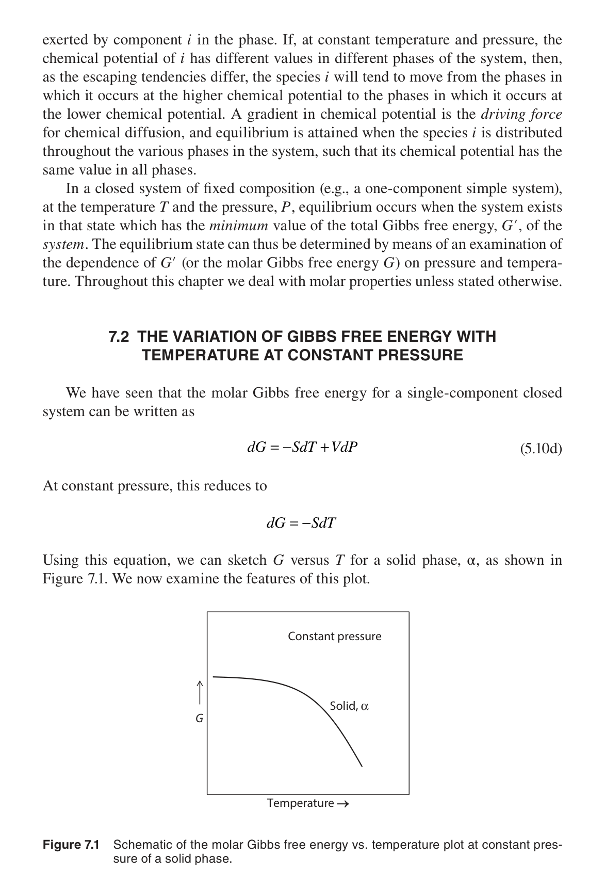
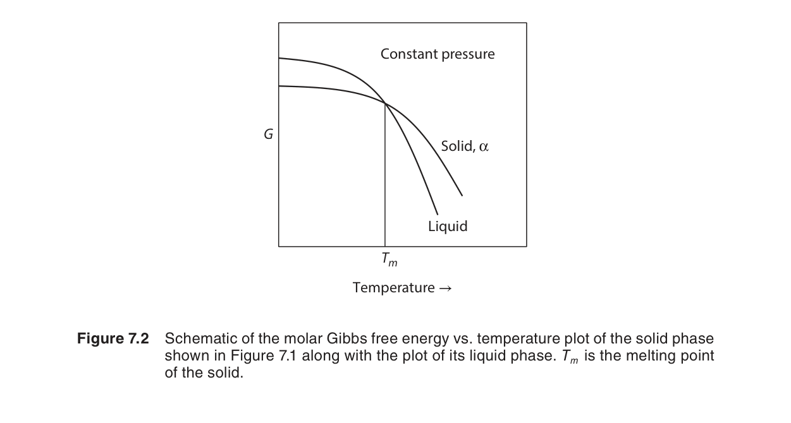
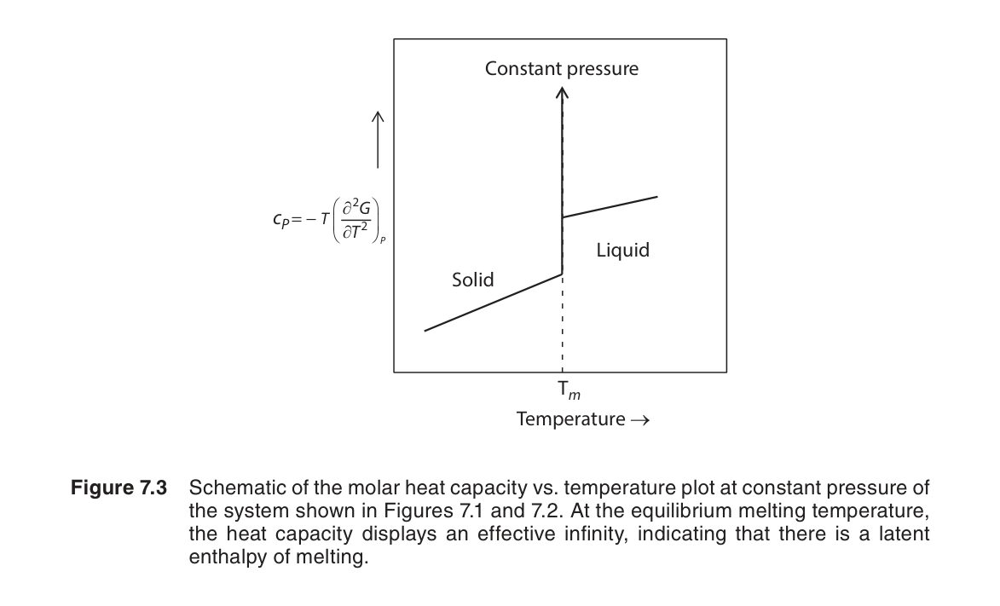
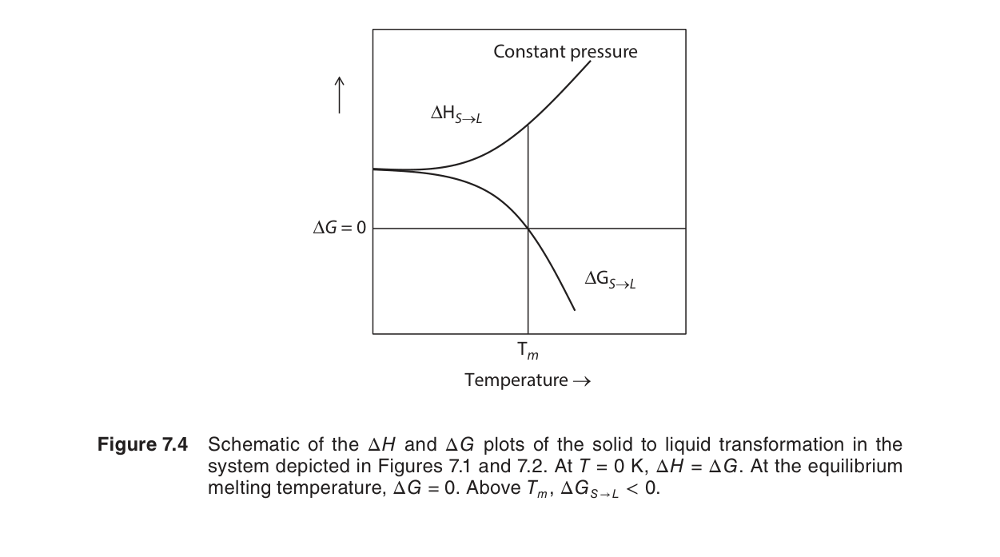
在兩相共存溫度（$T_{\text{tr}}$）：
且：
這是我們在第三章從熵的角度推導過的關係——現在從 $G$ 的角度重新獲得。
利用 $C_P$ 計算 $G(T)$——與第六章的聯繫
在第六章中，我們學習了如何利用熱容量數據計算焓和熵隨溫度的變化：
結合 $G = H - TS$，我們就可以計算任意溫度下的 $G(T)$：
這在實際應用中至關重要——只要有了 $C_P(T)$、$H(298)$ 和 $S(298)$，我們就能預測任何溫度下的相穩定性，無需在每個溫度下做實驗。
7.3 吉布斯自由能隨壓力的變化（Variation of $G$ with Pressure）
基本關係
從 $dG = -S\,dT + V\,dP$，定溫下 $dT = 0$：
因為 $V > 0$，$G$ 總是隨壓力升高而增加。增加的速率等於體積：
- 固相和液相：$V$ 很小（∼10 cm³/mol）→ $G(P)$ 斜率很小→對壓力不敏感
- 氣相：$V$ 很大（∼22,400 cm³/mol 在 STP）→ $G(P)$ 斜率極大→對壓力極敏感
這解釋了為什麼低壓時氣相穩定、高壓時固相穩定。在低壓時，氣相的 $G$ 很低（因為 $G$–$P$ 靈敏度大，低 $P$ 使 $G$ 大幅下降）；隨著壓力升高，氣相的 $G$ 迅速攀升（$V$ 大），而固相和液相的 $G$ 只是緩慢增加。在高壓極限下，固相的小體積優勢最終勝出。
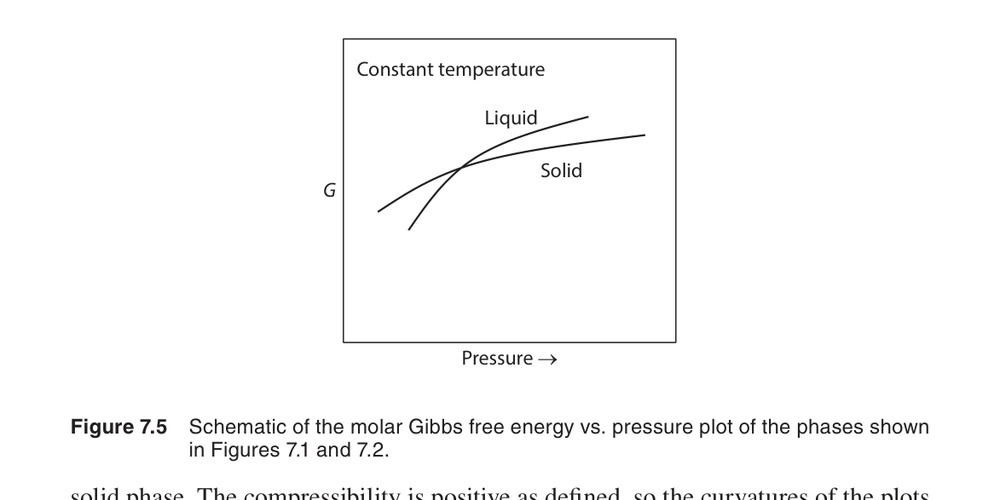
對於理想氣體（$V = RT/P$），從 $P_1$ 到 $P_2$ 的 $\Delta G$ 可以直接積分：
推導詳解
式 (7.4) 的完整推導：對理想氣體 $V = RT/P$，定溫下 $dG = V dP = (RT/P)dP$。從 $P_1$ 到 $P_2$ 積分：
這個簡潔的對數關係是化學位隨壓力變化的基礎（$\mu = \mu^\circ + RT\ln P/P^\circ$），也是第十一章平衡常數推導的起點。
對於凝聚相（固體或液體），$V$ 近似為常數（實際上隨 $P$ 略有變化，但變化很小）：
這說明凝聚相的 $G$ 基本上隨壓力線性增加——這也是為什麼在 $P$–$T$ 相圖中，固–液邊界近乎垂直：因為 $\Delta V_{\text{fus}}$ 很小，$G$ 對 $P$ 的靈敏度在固相和液相之間差別不大。
7.4 吉布斯自由能做為溫度與壓力的函數（$G$ as a Function of $T$ and $P$）
將 7.2 和 7.3 的結果合併，$G(T,P)$ 的全微分為 $dG = -S\,dT + V\,dP$。在三維空間 $(T, P, G)$ 中，每一相都是一個曲面。曲面的局部斜率由 $S$ 和 $V$ 決定。
這種三維表示非常直觀：
- 沿 $T$ 軸方向：曲面以斜率 $-S$ 向下傾斜。氣相的曲面最陡（$S$ 大），固相最平緩。
- 沿 $P$ 軸方向：曲面以斜率 $V$ 向上傾斜。氣相的曲面最陡（$V$ 大），固相最平緩。
- 相邊界：兩個 $G$ 曲面的交線投影到 $(T,P)$ 平面上，就是我們看到的相邊界曲線。
- 三相點：三個曲面共同的交點——這解釋了為什麼三相點在 $P$–$T$ 圖上是唯一的點。
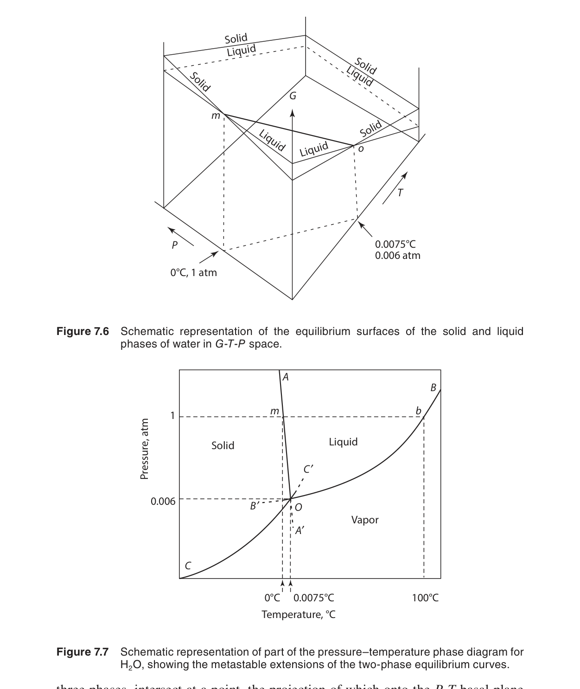
從 $G(T,P)$ 曲面理解相變
當系統沿著 $P$–$T$ 平面上的某一路徑移動時，如果穿過了兩個曲面的交線，系統就會發生相變。交線的斜率 $dP/dT$ 由 Clapeyron 方程式（7.5 節）給出。這個斜率完全由兩個曲面在交線處的相對方向決定——而相對方向又由 $S$ 和 $V$ 的差值決定。這就是為什麼 $dP/dT = \Delta S/\Delta V$。
7.5 氣相與凝態相的平衡——Clapeyron 與 Clausius–Clapeyron 方程式
Clapeyron 方程式的完整推導
沿兩相共存曲線，$G^\alpha = G^\beta$ 且當 $(T,P)$ 沿曲線移動時 $dG^\alpha = dG^\beta$。展開 $dG = -SdT + VdP$：
將含有 $dT$ 的項移到左邊，$dP$ 的項移到右邊：
整理得：
利用 $\Delta G = \Delta H - T\Delta S = 0$（平衡條件），$\Delta S = \Delta H / T$：
這就是Clapeyron 方程式——它精確給出了 $P$–$T$ 圖上任何一階相變邊界的斜率。$\Delta H$ 是相變熱（可從熱卡計測量），$\Delta V$ 是體積變化（可從密度測量）。因為 $dP/dT$ 可以從實驗測量，Clapeyron 方程式反過來也用於驗證或推算 $\Delta H$ 值。
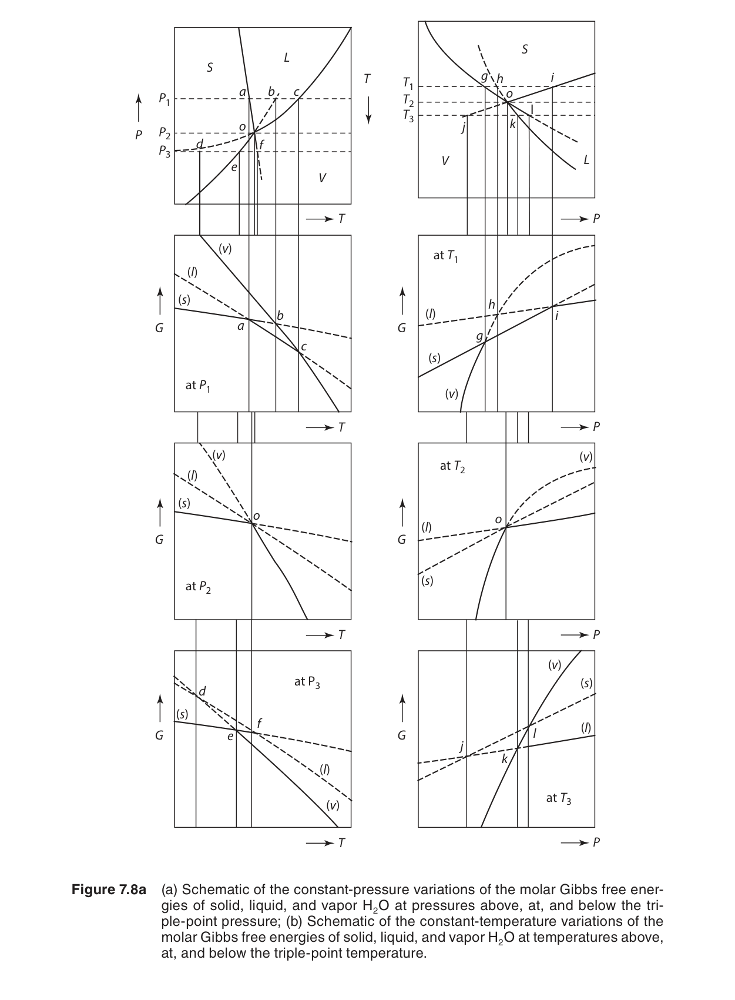
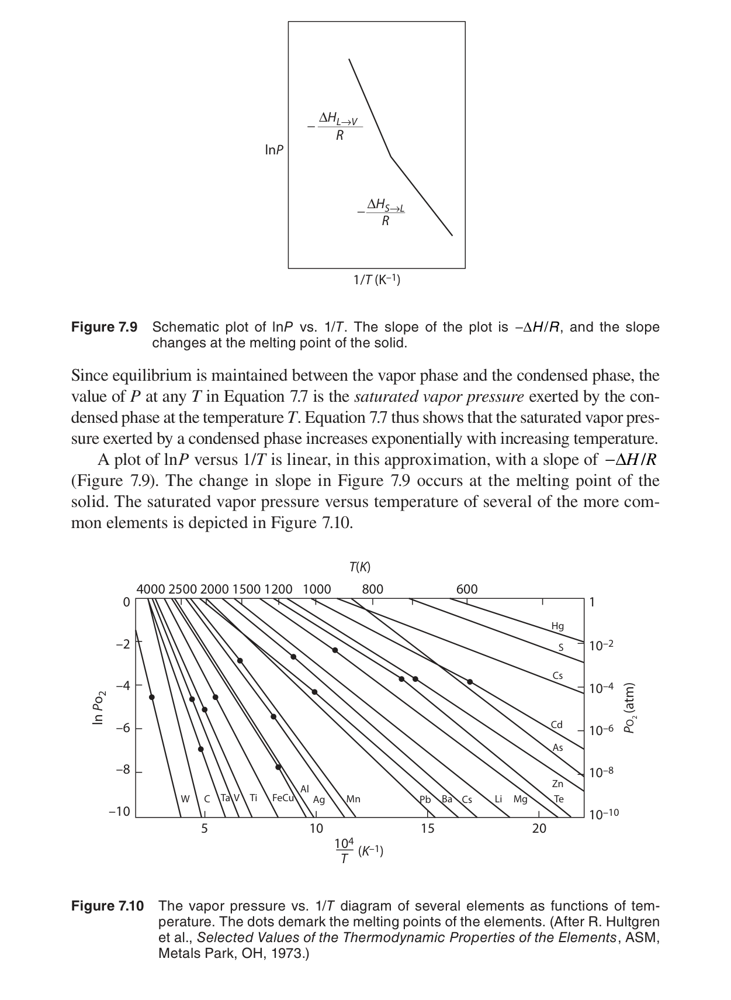
Clausius–Clapeyron 方程式的推導
對於涉及氣相的平衡（液–氣或固–氣），$\Delta V = V_{\text{gas}} - V_{\text{cond}} \approx V_{\text{gas}}$，因為凝聚相（液體或固體）的體積比氣相小兩到三個數量級。代入理想氣體狀態方程 $V_{\text{gas}} = RT/P$：
分離變數：
左邊是 $d\ln P$，右邊是 $-d(1/T)$：
這就是Clausius–Clapeyron 方程式——描述蒸氣壓隨溫度的指數上升。
Clausius–Clapeyron 的積分形式
假設 $\Delta H$ 在溫度範圍內為常數，對式 (7.6) 積分：
或者寫成更常用的形式：
其中 $C$ 是積分常數。這說明 $\ln P$ 與 $1/T$ 呈線性關係，斜率為 $-\Delta H/R$。
實際應用——蒸氣壓測定
Clausius–Clapeyron 方程式可能是材料科學中最常用的熱力學公式之一：
- 測定汽化熱：測量兩個溫度下的蒸氣壓 $(T_1, P_1)$ 和 $(T_2, P_2)$，代入式 (7.7) 即可計算 $\Delta H_{\text{vap}}$。
- 預測蒸氣壓：已知 $\Delta H_{\text{vap}}$ 和一個參考點的蒸氣壓，可預測任何溫度下的 $P$。
- CVD 製程：在半導體化學氣相沉積中，前驅物的蒸氣壓–溫度關係直接決定了輸運速率和沉積均勻性。
- 蒸餾設計：化工分離過程的設計依賴於精確的蒸氣壓數據。
固–液平衡（熔化曲線）的詳細討論
對大多數物質，$\Delta H_{\text{fus}} > 0$（熔化吸熱）且 $\Delta V_{\text{fus}} > 0$（液體密度低於固體）→ $dP/dT > 0$——熔化溫度隨壓力升高。利用 Clapeyron 方程式可以計算具體數值：
鐵（Fe）：$T_m = 1811\ \text{K}$，$\Delta H_{\text{fus}} = 13.8\ \text{kJ/mol}$，$\Delta V_{\text{fus}} = 0.18\ \text{cm}^3/\text{mol}$
即壓力每增加 42 atm，鐵的熔點升高 1 K。
錫（Sn）：$T_m = 505\ \text{K}$，$\Delta H_{\text{fus}} = 7.0\ \text{kJ/mol}$，$\Delta V_{\text{fus}} = 0.37\ \text{cm}^3/\text{mol}$
水的著名例外：對於水（冰），$\Delta V_{\text{fus}} < 0$（冰的密度低於水，體積收縮）→ $dP/dT < 0$。壓力增加使冰的熔點降低——這就是為什麼溜冰時冰刀施加的高壓使冰局部熔化形成潤滑水膜。
即壓力每增加 134 atm，水的熔點降低 1 K。
| 物質 | $T_m$ (K) | $\Delta H_{\text{fus}}$ (kJ/mol) | $\Delta V_{\text{fus}}$ (cm³/mol) | $dP/dT$ (atm/K) |
|---|---|---|---|---|
| 水（冰） | 273 | 6.01 | −1.63 | −134 |
| 鐵 (Fe) | 1811 | 13.8 | +0.18 | +42 |
| 錫 (Sn) | 505 | 7.0 | +0.37 | +37 |
| 銅 (Cu) | 1357 | 13.1 | +0.33 | +36 |
| 鋁 (Al) | 933 | 10.7 | +0.70 | +22 |
7.6 氣相與凝態相平衡的圖形表示（Graphical Representation）
在 $P$–$T$ 圖上：
- 固–氣曲線（昇華線）：從原點出發，隨溫度上升而上升（$\Delta H_{\text{sub}} > 0$）。斜率由 Clausius–Clapeyron 決定。
- 液–氣曲線（汽化線）：從三相點出發，終止於臨界點（critical point）——在此點之上，液體和氣體不可區分。水的臨界點：$T_c = 647\ \text{K}$（374°C），$P_c = 218\ \text{atm}$。
- 固–液曲線（熔化線）：從三相點向上延伸，沒有臨界點（固體和液體的對稱性不同，無法連續過渡）。大多數物質的熔化線近垂直（$dP/dT$ 大），因為 $\Delta V_{\text{fus}}$ 很小。
- 三相點：三條曲線的唯一交點。自由度為零（$F = 1 - 3 + 2 = 0$）→溫度和壓力完全固定。
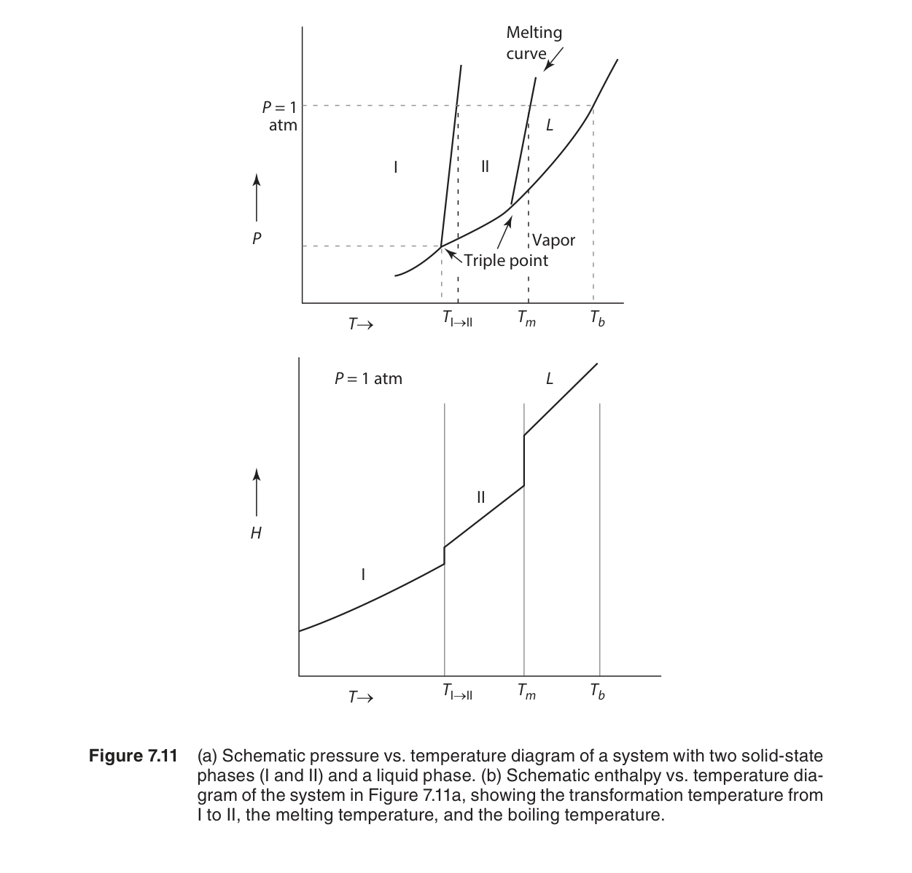
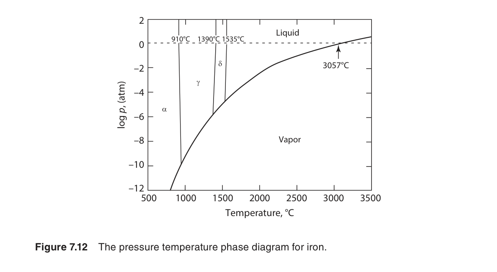
臨界現象的熱力學
在臨界點 $(T_c, P_c)$，液體和氣體的性質變得完全相同：
- $\Delta H_{\text{vap}} \to 0$（汽化熱趨近於零）
- $\Delta V_{\text{vap}} \to 0$（液–氣體積差趨近於零）
- Clapeyron 方程式中的 $dP/dT$ 變為不定式 $0/0$——但仍可通過極限分析（L'Hôpital 法則）確定其值
- 在臨界點以上，物質以超臨界流體（supercritical fluid）形式存在，兼具液體的溶解能力和氣體的擴散性
超臨界 $CO_2$ 在工業上廣泛用作綠色溶劑——用於咖啡因萃取、精密清洗和聚合物加工。
7.7 固–固平衡（Solid–Solid Equilibria）
許多單成分系統有多種固相——這稱為同素異形體（polymorphism 或 allotropy）。經典例子：
- 鐵：$\alpha$-Fe（bcc，室溫）$\xrightarrow{910\,^{\circ}\text{C}}$ $\gamma$-Fe（fcc）$\xrightarrow{1400\,^{\circ}\text{C}}$ $\delta$-Fe（bcc）
- 碳：石墨（室溫穩定）⇌ 金剛石（高壓穩定）
- 錫：$\beta$-Sn（白錫，金屬）→ $\alpha$-Sn（灰錫，半導體），低於 13°C——這就是「錫疫」（tin pest）
- 鈦：$\alpha$-Ti（hcp）$\xrightarrow{882\,^{\circ}\text{C}}$ $\beta$-Ti（bcc）
固–固相變同樣遵循 Clapeyron 方程式。由於 $\Delta V_{\text{tr}}$ 通常非常小（兩種固相的密度接近），$dP/dT$ 很大——固–固相邊界在 $P$–$T$ 圖上近乎垂直。
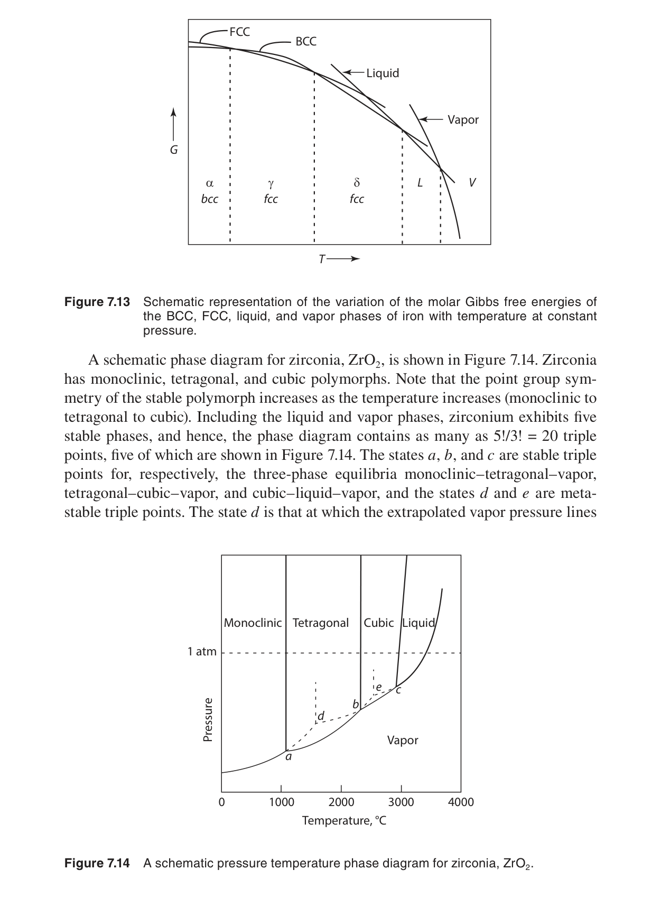
詳細熱力學分析——鐵的同素異形體
鐵是高溫材料中最具有實際重要性的同素異形體系統之一。$\alpha$-Fe → $\gamma$-Fe 的轉變在 910°C（$T_{\text{tr}}$）發生，伴隨著 bcc → fcc 的晶體結構變化：
- $\Delta H_{\text{tr}} \approx 0.9\ \text{kJ/mol}$（轉變熱相對較小）
- $\Delta V_{\text{tr}} \approx -0.13\ \text{cm}^3/\text{mol}$（fcc 的堆積密度高於 bcc）
- $dP/dT = \Delta H_{\text{tr}} / (T_{\text{tr}} \Delta V_{\text{tr}}) \approx -55\ \text{atm/K}$——壓力升高使 $\alpha \to \gamma$ 轉變溫度降低
這在鋼的熱處理中至關重要：高壓可以改變奧氏體化溫度，影響淬火後的顯微組織和力學性能。
石墨 → 金剛石——熱力學案例研究
室溫常壓下，石墨的 $G$ 低於金剛石（石墨是穩定相）。但金剛石的密度（3.51 g/cm³）遠高於石墨（2.26 g/cm³）→ 金剛石的 $V$ 較小 → 其 $G(P)$ 上升較慢。在高壓下，金剛石的 $G$ 最終變得低於石墨：
當 $P$ 足夠大時，$\Delta G$ 由正變負——金剛石化為穩定相。實際的轉變壓力在室溫下約為 15,000 atm（1.5 GPa）。這正是人造金剛石合成（HPHT 法）的熱力學基礎。
錫疫——一個歷史案例
$\beta$-Sn（白錫）在低於 13°C 時自發轉變為 $\alpha$-Sn（灰錫）。這個固–固相變具有重要的歷史意義：拿破崙遠征俄國時期，士兵制服上的錫鈕扣在嚴寒中碎裂成粉末——因為 $\beta \to \alpha$ 轉變伴隨著巨大的體積膨脹（$\Delta V > 0$），導致材料崩解。Clapeyron 方程式的預測：
壓力越高，轉變溫度越高。這意味著高壓可以抑制錫疫的發生——在實際中，加入少量銻（Sb）也可以穩定 $\beta$-Sn 相，防止低溫降解。
與第十章（二元相圖）的聯繫
第十章將把本章的 Clapeyron 概念推廣到二元（binary）系統。在二元系統中，相平衡條件從 $G^\alpha = G^\beta$ 擴展為化學位相等：$\mu_i^\alpha = \mu_i^\beta$（對每一組分 $i$）。Clapeyron 方程式推廣為：
這直接導出了第十章將要討論的液–固相線形狀和凝固區間的概念。因此，第七章的 Clapeyron 方程式是理解所有更高維度相圖的基石。
7.8 外加磁場對 $P$–$T$ 圖的影響（Effect of an Applied Magnetic Field）
對於磁性材料，外加磁場提供了一個額外的熱力學自由度。磁場下的基本方程式包含磁功項：
對應的 $dG$ 表達式（$G = U + PV - TS - \mu_0 HM$）：
沿兩相共存曲線，$dG^\alpha = dG^\beta$，展開後：
在定壓下（$dP = 0$），得到磁場對相變溫度的影響：
其中 $\Delta M$ 是兩相之間磁化強度的差值。
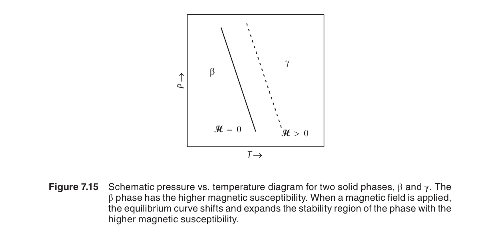
這在磁制冷（magnetic refrigeration）中有直接應用——利用絕熱去磁（adiabatic demagnetization）來達到極低溫。磁制冷材料（如 Gd–Si–Ge 合金）的設計正是基於這類熱力學分析。
7.9 例題與圖解（Example Problems）
本節彙整了 Gaskell 教材中第七章的典型例題圖解。這些圖像展示了本章核心概念在實際問題中的應用。
例題 7.1：Clapeyron 方程式的應用
已知苯的 $\Delta H_{\text{fus}} = 9.95\ \text{kJ/mol}$，$T_m = 278.7\ \text{K}$，液體密度 $0.899\ \text{g/cm}^3$，固體密度 $0.891\ \text{g/cm}^3$（分子量 78.11 g/mol）。計算熔化曲線的斜率 $dP/dT$。
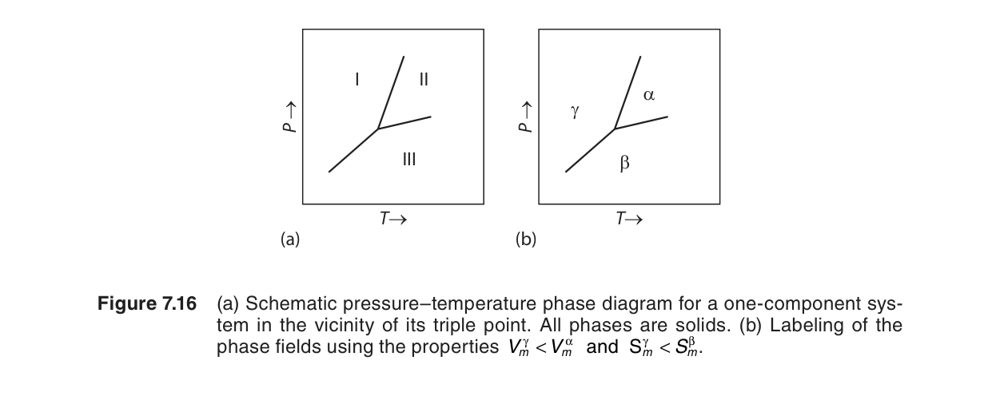
例題 7.2：Clausius–Clapeyron 的應用
已知水的蒸氣壓在 25°C 時為 23.76 mmHg，在 100°C 時為 760 mmHg。估算水的平均汽化熱 $\Delta H_{\text{vap}}$。
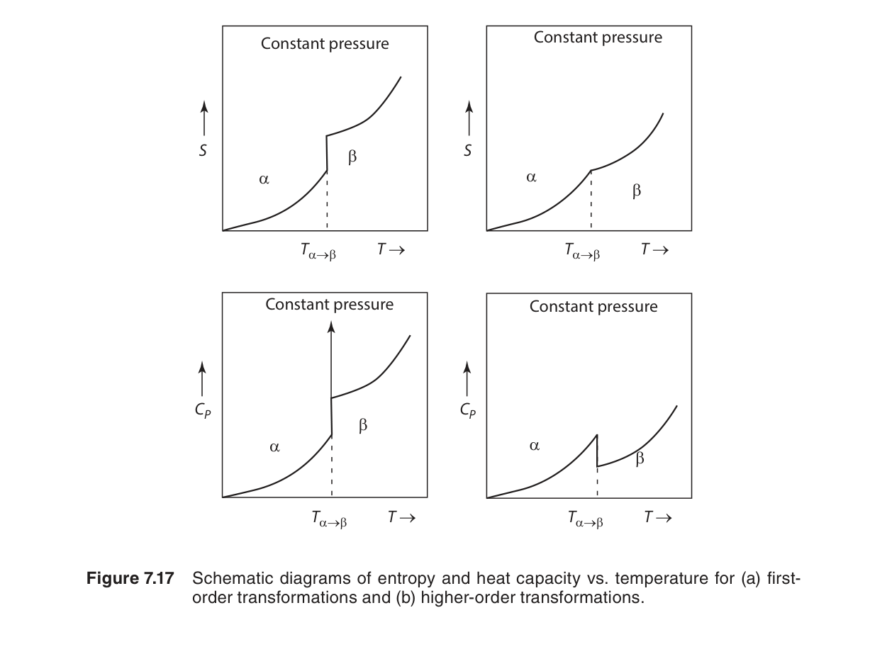
例題 7.3：蒸氣壓曲線的完整計算
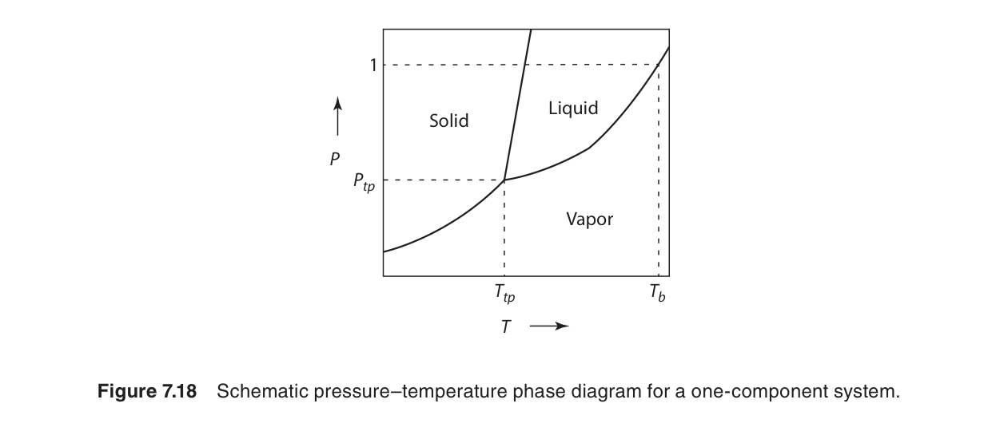
例題 7.4：固–固相變的 Clapeyron 分析
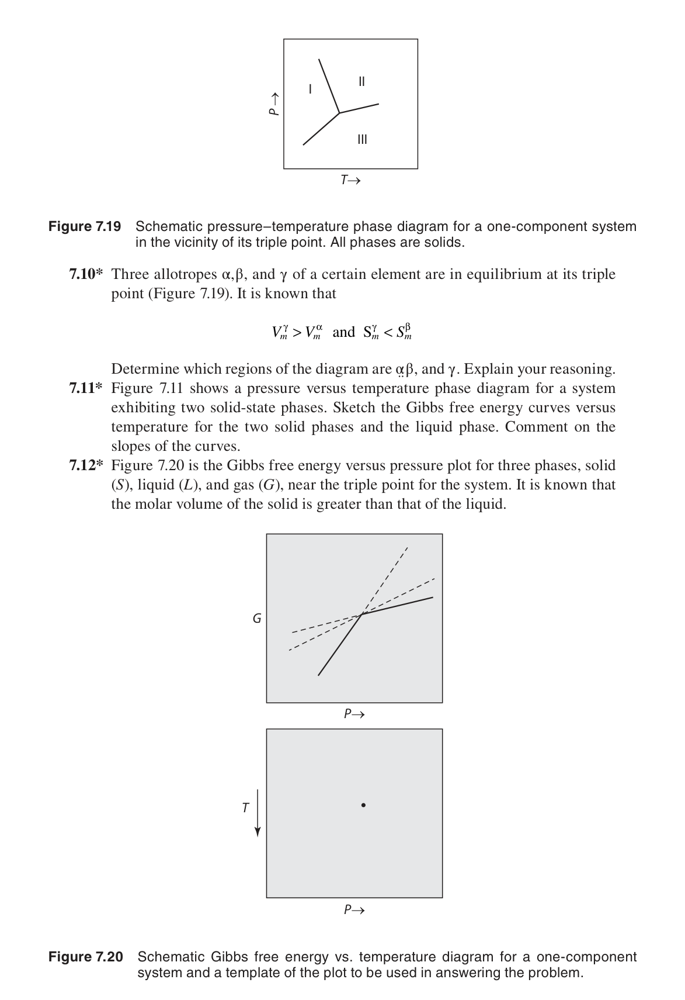
例題 7.5：磁場對相變的影響
例題 7.6：綜合應用——水的完整 $P$–$T$ 圖
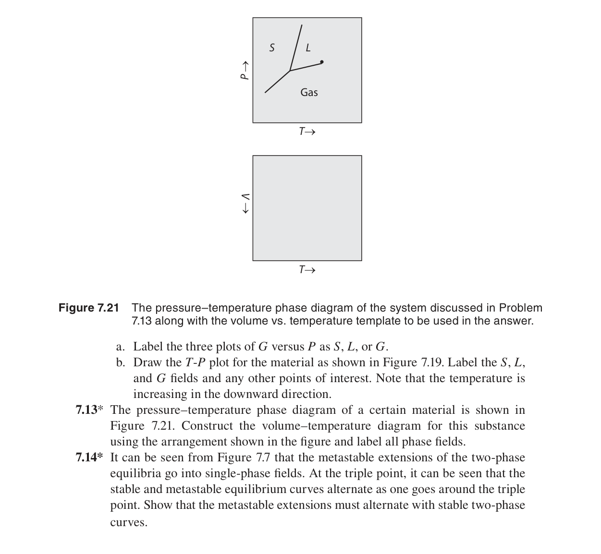
本章摘要
- $G(T)$ 關係：$(\partial G/\partial T)_P = -S$。$S$ 越大→$G$ 隨溫度下降越快→高溫時高熵相（氣體）穩定。
- $G(P)$ 關係：$(\partial G/\partial P)_T = V$。高壓時低體積相（固體）穩定。理想氣體：$\Delta G = RT\ln(P_2/P_1)$。
- Clapeyron 方程式：$dP/dT = \Delta H/T\Delta V$。從 $dG^\alpha = dG^\beta$ 推導。決定所有一階相變邊界的斜率。
- Clausius–Clapeyron：$d\ln P/dT = \Delta H/RT^2$。蒸氣壓的指數溫度依賴。積分形式：$\ln(P_2/P_1) = -(\Delta H/R)(1/T_2 - 1/T_1)$。
- 固–固平衡：同素異形體轉變。$\Delta V$ 小→$dP/dT$ 大→相邊界近乎垂直。高壓穩定高密度相（如金剛石）。
- 磁場效應：$dT/dH = -\mu_0 \Delta M/\Delta S$。磁制冷和磁場輔助材料製程的基礎。
- 與後續章節的聯繫：本章的 Clapeyron 方程式（純物質相變）是第十章（二元相圖）和第十一章（化學反應平衡）的熱力學基礎。第六章的 $C_P$ 數據提供了計算 $G(T)$ 的實驗輸入。